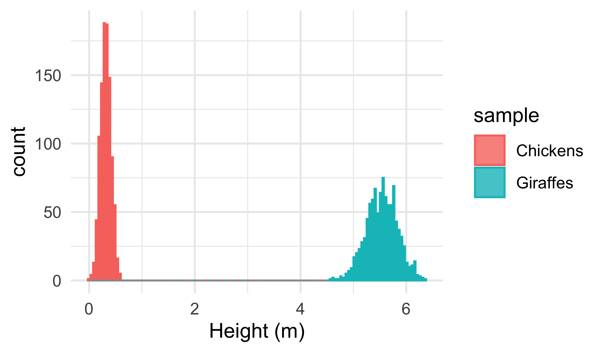

6. Assumptions
When Assumptions Fail Alchemy Starts
Smit, A. J. ![]()

NoteIn This Chapter
- Revisiting assumptions
- Normality and homogeneity of variance tests
- Revisiting the non-parametric tests
- Log transformation
- Square-root transformation
- Arcsine transformation
- Power transformation
- Lesser-used transformation
ImportantTasks to Complete in This Chapter
- None
1 Introduction
Parametric statistical tests such as t-tests, ANOVAs, regressions, and correlations are built on some assumptions about the nature of our data. In life, however, sometimes things get messy, the assumptions go unmet. In this Section we will look in more detail into testing the assumptions and what do do when the assumptions are violated.
2 Testing the Assumptions
The parametric statistical tests that we are frequently required to perform demand that our data fulfil a few crucial assumptions that are not guaranteed to hold. These assumptions are frequently violated as real-world data, particularly biological data, are typically complex, often contain measurement errors or other sources of variability. Therefore and we need to ensure that:
- the data are normally distributed, meaning that the data follow a Gaussian distribution;
- that the data are homoscedastic, i.e. the variance should be the same across all levels of the independent variable, and in particular, that there are no outliers;
- the dependent variable must be continuous,
- the observations in the groups being compared are independent of each other,
I view the last two points as expectations, not an assumptions, because these two aspects of our data are entirely under our control. No amount of transformation, manipulation can make data independent or continuous if they were not produced to be so right from the outset.
Notei.i.d.
Sometimes we will see the term i.i.d. which stands for “independent and identically distributed”. i.i.d. is a general way of stating the assumptions, particularly bullet points 2-4 above.
Independent means that the occurrence of one event does not affect the occurrence of any other event in the sample. In other words, the observations are unrelated to each other.
Identically distributed means that each observation is drawn from the same underlying probability distribution. In other words, the statistical properties of each observation are the same.
How do we know that the assumptions of normality and homoscedasticity are not violated? Here are your options. Although I mention the stats tests to use, I will not explain each in detail with examples. You should easily be able to figure it out at this stage of your R journey.
2.1 Tests for Normality
Remember from Chapter 4 what a normal distribution is/looks like? Let us have a peek below to remind ourselves (Figure 1).
Whereas histograms may be a pretty way to check the normality of our data, there are actual statistical tests for this, which is preferable to a visual inspection alone. But remember that you should always visualise your data before performing any statistics on them.
NoteHypothesis for Normailty
\(H_{0}\): The distribution of our data is not different from normal (or the variable is normally distributed).
The Shapiro-Wilk test is frequently used to assess the normality of a dataset. It is known to have good power and accuracy for detecting departures from normality, even for small sample sizes, and it is also robust to outliers, making it useful for analysing data that may contain extreme values.
It tests the H0 that the population from which the sample, \(x_{1},..., x_{n}\), was drawn is not significantly different from normal. The test does so by sorting the data from lowest to highest, and a test statistic, \(W\), is calculated based on the deviations of the observed values from the expected values under a normal distribution (Equation 1). \(W\) is compared to a critical value, based on the sample size, significance level and to determine whether to reject or fail to reject the H0.
The Shapiro-Wilk test: \[W = \frac{(\sum_{i=1}^n a_i x_{(i)})^2}{\sum_{i=1}^n (x_i - \overline{x})^2} \tag{1}\]
Here, \(W\) represents the Shapiro-Wilk test statistic, \(a_{i}\) are coefficients that depend on the sample size and distribution of the data, \(x_{(i)}\) represents the \(i\)-th order statistic, or the \(i\)-th smallest value in the sample,\(\overline{x}\) represents the sample mean.
The Shapiro-Wilk test is available within base R as the function shapiro.test(). If the p-value is above 0.05 we may assume the data to be normally distributed. In order to demonstrate what the output of shapiro.test() looks like we will run it on all of the random data we generated.
R>
R> Shapiro-Wilk normality test
R>
R> data: r_dat$dat
R> W = 0.70346, p-value < 2.2e-16Note that this shows that the data are not normally distributed. This is because we have incorrectly run this function simultaneously on two different samples of data. To perform this test correctly, and in the tidy way, we need to recognise the grouping structure (chickens, giraffes) and select only the second piece of information from theshapiro.test() output and ensure that it is presented as a numeric value:
R> # A tibble: 2 × 2
R> sample norm_dat
R> <chr> <dbl>
R> 1 Chickens 0.461
R> 2 Giraffes 0.375Now we see that our two sample sets are indeed normally distributed.
Several other tests are available to test whether our data are consistent with a normal distribution:
Kolmogorov-Smirnov test This test is a non-parametric test that compares the empirical distribution of a sample with a hypothesised normal distribution. It is based on the maximum absolute difference between the cumulative distribution function of the sample and the theoretical normal distribution function. This test can also be used to see if one’s own data are consistent with other kinds of data distributions. In R the Kolmogorov-Smirnov test is available as
ks.test().Anderson-Darling test Similar to the Shapiro-Wilk test, the Anderson-Darling test is used to test the hypothesis that a sample comes from a normal (or any other) distribution. It is based on the squared differences between the empirical distribution function of the sample, the theoretical normal distribution function. This function is not natively available in base R but the function
ad.test()is made available in two packages (that I know of), namely, nortest, kSamples. Read the help files — even though the name of the function is the same in the two packages and they are implemented differently.Lilliefors test This test is a modification of the Kolmogorov-Smirnov test that is specifically designed for small sample sizes. It is based on the maximum difference between the empirical distribution function of the sample and the normal distribution function. Some R packages such as nortest and descTools seem to use Lilliefors synonymously with Kolmogorov-Smirnov. These functions are called
lillie.test()andLillieTest(), respectively.Jarque-Bera test This test is based on the skewness and kurtosis of a sample and tests whether the sample has the skewness and kurtosis expected from a normal distribution. Find it in R as
jarque.bera.test()in the DescTools and tseries packages. Again, read the help files as a function with the same name appears in two independent packages, I cannot give assurance that it implemented consistently.Cramer-Von Mises test The Cramer-Von Mises test is used to assess the goodness of fit of a distribution to a sample of data. The test is based on the cumulative distribution function (CDF) of the sample and the theoretical distribution being tested. See the
cvm.test()function in the goftest package.
Take your pick. The Shapiro-Wilk and Kolmogorov-Smirnov tests are the most frequently used normality tests in my experience but be adventurous and use the Cramer-Von Mises test and surprise your supervisor in an interesting way — more than likely, they will not have heard of it before. When you decide, however, do your homework, read about these pros and cons of the tests as they are not all equally robust to all the surprises data can throw at them.
2.2 Tests for Homogeneity of Variances
Besides requiring that our data are normally distributed, we must also ensure that they are homoscedastic. This word means that the scedasticity (variance) of our samples is homogeneous (similar). In practical terms this means that the variance of the samples we are comparing should not be more than two to four times greater than one another. In R, we use the function var() to check the variance in a sample:
R> # A tibble: 2 × 2
R> sample sample_var
R> <chr> <dbl>
R> 1 Chickens 0.00994
R> 2 Giraffes 0.0872Above we see that the variance of our two samples is heteroscedastic because the variance of one more than two to four times greater than the other. However, there are formal tests to establish the equality of variances, as we can see in the following hypothesis tests:
NoteHypotheses for Equality of Variances
The two-sided and one-sided formulations are:
\(H_{0}: \sigma^{2}_{A} = \sigma^{2}_{B}\)\(H_{a}: \sigma^{2}_{A} \ne \sigma^{2}_{B}\)
\(H_{0}: \sigma^{2}_{A} \le \sigma^{2}_{B}\)\(H_{a}: \sigma^{2}_{A} \gt \sigma^{2}_{B}\)
\(H_{0}: \sigma^{2}_{A} \ge \sigma^{2}_{B}\)\(H_{a}: \sigma^{2}_{A} \lt \sigma^{2}_{B}\)
where \(\sigma^{2}_{A}\)\(\sigma^{2}_{B}\) are the variances for samples \(A\)\(B\), respectively.
The most commonly used test for equality of variances is Levene’s test, car::leveneTest(). Levene’s test assess the equality of variances between two or more groups in a dataset. The H0 is that the variances of the groups are equal. It is a non-parametric test that does not assume anything about the data’s normality and as such it is more robust than the F-test.
The test is commonly used in t-tests and ANOVA to check that the variances of the dependent variable are the same across all levels of the independent variable. Violating this assumption can lead to incorrect conclusions made from the test outcome, such as those resulting from Type I, Type II errors.
In Levene’s test, the absolute deviations of the observations from their group medians are calculated, and the test statistic is computed as the ratio of the sum of the deviations to the degrees of freedom (Equation 2). The test statistic follows an F distribution under the H0, and a significant result indicates that the variances of the groups are significantly different.
Levene’s test:
\[W = \frac{(N-k)}{(k-1)} \cdot \frac{\sum_{i=1}^k n_i (\bar{z}_i - \bar{z})^2}{\sum_{i=1}^k \sum_{j=1}^{n_i} (z_{ij} - \bar{z}_i)^2} \tag{2}\]
where \(W\) represents the Levene’s test statistic, \(N\) is the total sample size, \(k\) is the number of groups being compared, \(n_i\) is the sample size of the \(i\)-th group, \(z_{ij}\) is the \(j\)-th observation in the \(i\)-th group, \(z_{i}\) is the mean of the ith group,\(\bar{z}\) is the overall mean of all groups combined.
The test statistic is calculated by comparing the deviations of the observations within each group from their group mean (\(\bar{z}_i\)) to the deviations of the group means from the overall mean (\(\bar{z}\)).
Levene’s test is considered robust to non-normality and outliers, making it a useful tool for analysing data that do not meet the assumptions of normality, but it can be sensitive to unequal sample sizes, may not be appropriate for very small sample sizes.
R> Levene's Test for Homogeneity of Variance (center = median)
R> Df F value Pr(>F)
R> group 1 702.15 < 2.2e-16 ***
R> 1998
R> ---
R> Signif. codes: 0 '***' 0.001 '**' 0.01 '*' 0.05 '.' 0.1 ' ' 1Above, we see that p < 0.05, causing us to accept the alternative hypothesis that the variances are unequal between the sample of giraffes, the sample of chickens.
Several other statistical tests are available to assess the homogeneity of variances in a dataset:
F-test This test is also known as the variance ratio test. Use the
var.test()function in R. It assumes that the underlying data follows a normal distribution and is designed to test the H0 that the variances of two populations are equal. The test statistic is the ratio of the variances of the two populations. You will often see this test used in the context of an ANOVA to test for homogeneity of variance across groups.Bartlett’s test This test is similar to Levene’s test and is used to assess the equality of variances across multiple groups. The test is based on the \(\chi\)-squared distribution and assumes that the data are normally distributed. Base R has the
bartlett.test()function.Brown-Forsythe test This test is a modification of the Levene’s test that uses the absolute deviations of the observations from their respective group medians instead of means. This makes the test more robust to outliers and non-normality. It is available in onewaytests as the function
bf.test().Fligner-Killeen test This is another non-parametric test that uses the medians of the groups instead of the means. It is based on the \(\chi\)-squared distribution and is also robust to non-normality and outliers. The Fligner test is available in Base R as
fligner.test().
As always, supplement your analysis with these checks: i) perform any of the diagnostic plots we covered in the earlier Chapters, or ii) compare the variances, see if they differ by more than a factor of four.
See this discussion if you would like to know about some more advanced options when faced with heteroscedastic data.
3 Epic Fail… Now What? Non-parametric Statistics!
Tests for these two assumptions fail often with real data. Once we have evaluated our data against the two critical assumptions and discovered that one or both of the assumptions are not met, we are presented with two options. Firstly, we can select an appropriate non-parametric test. If that is not possible, then we may need to consider transforming our data. However, it is preferable to avoid the latter option whenever feasible.
NoteParametric and Non-parametric Tests
Parametric tests assume that the data follow a specific distribution, such as the normal distribution, and that the population parameters are known, can be estimated from the sample data. Examples of parametric tests include t-tests or ANOVA, and regression analysis.
Non-parametric tests make fewer assumptions about the underlying distribution of the data and are used when the data do not meet the assumptions of parametric tests. Non-parametric tests do not rely on population parameters but instead use ranks or other non-numerical measures of the data. Examples of non-parametric tests include the Wilcoxon rank-sum test (non-parametric substitute for t-tests) or the Kruskal-Wallis test (substitute for ANOVA).
In general, parametric tests are more powerful than non-parametric tests when the assumptions are met, but non-parametric tests are more robust, can be used in a wider range of situations. The choice between parametric and non-parametric tests depends on the nature of the data and the research question being addressed.
Non-parametric tests do not assume a specific probability distribution for the data. These tests are often used when the assumptions of normality and homoscedasticity underlying parametric tests are violated. The non-parametric substitutes for the parametric tests that we will often have to use are discussed in Chapter 12. Later we will also cover data transformations as an alternative approach to dealing with departures from our assumptions as seen in Chapter 14.
Citation
BibTeX citation:
@online{a._j.2021,
author = {A. J. , Smit},
title = {6. {Assumptions}},
date = {2021-01-01},
url = {http://samos-r.netlify.app/basic_stats/06-assumptions.html},
langid = {en}
}
For attribution, please cite this work as:
A. J. S (2021) 6. Assumptions. http://samos-r.netlify.app/basic_stats/06-assumptions.html.